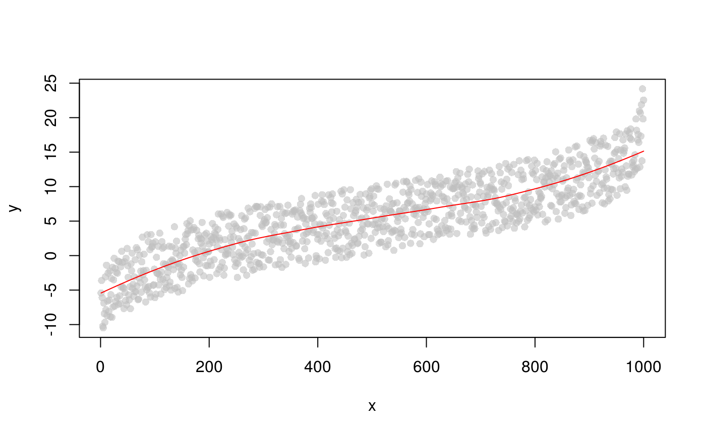

This function gets the euclidean (by default) distances between all points in a 2-D coordinate
system (x,y) to a group of points that fall on a fitted loess curve. It uses the dist.matrix
function from the wordspace package.It is used in the selVarGenes function.
.getDistMat( loessModel = NULL, x = NULL, y = NULL, x_curve = NULL, method = "euclidean", ... )
| loessModel | the loess fit to all points. |
|---|---|
| x | the x values of all points. |
| y | the y values of all points. |
| x_curve | the x values of the points on the loess curve. |
| method | distance measure to be used. |
| ... | additional parameters for the |
An object of class matrix and dist.matrix, containing the
distances between all points to the specified points on the loess curve.
library(stats) # create data x <- 1:1000 y <- sort(rnorm(n = 1000, mean = 0, sd = 5)) + runif(n = 1000, min = 0, max = 10) lo <- loess(y ~ x) x_curve <- seq(range(x)[1], range(x)[2], length.out = 100) # plot plot(x, y, pch = 16, col = "#BEBEBE90")# get euclidean distance of all points to the curve (red) euclMat <- swissknife:::.getDistMat(loessModel = lo, x = x, y = y, x_curve = x_curve) euclMat[1:6, 1:6]#> pointOnCurve1 pointOnCurve2 pointOnCurve3 pointOnCurve4 pointOnCurve5 #> xy1 0.0008572359 10.097604 20.19503 30.29223 40.38922 #> xy2 2.0742284971 9.205625 19.21254 29.28182 39.36546 #> xy3 2.1069699432 8.156373 18.23517 28.32687 38.42112 #> xy4 5.6762463650 8.785665 18.05589 27.90497 37.88389 #> xy5 6.4438142878 8.153589 17.18417 26.98059 36.93827 #> xy6 5.2080561772 5.408424 15.33874 25.40055 35.48198 #> pointOnCurve6 #> xy1 50.48598 #> xy2 49.45456 #> xy3 48.51620 #> xy4 47.91145 #> xy5 46.95458 #> xy6 45.56985